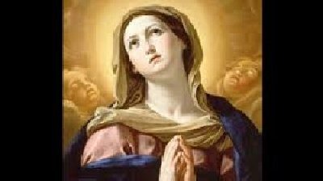
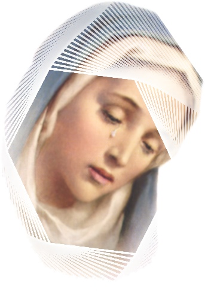

“PREFÁCIO”
HISTÓRICO
Duas vezes por ano a Igreja nos
recorda as “Dores de NOSSA
SENHORA”: Na Sexta-feira que antecede ao
Domingo de Ramos e no dia 15 de Setembro. Todavia,
antes mesmo da fixação
das mencionadas datas, em todo o mundo cristão, o povo já vinha lembrando ao longo
dos anos, os sofrimentos da MÃE DE DEUS. No século XIII cultivavam com evidência
a celebração das “Sete
Dores da SANTÍSSIMA VIRGEM MARIA”. Principalmente
a Ordem dos Servitas, fundada em 1240, muito contribuiu para propagar esta devoção.
Fizeram constar dos Estatutos da Ordem, que seus membros deviam santificar a si e
aos outros pela Meditação das Dores de MARIA e de Seu FILHO JESUS. No fim do século
XV a adesão do povo era geral, de modo admirável exercitavam o culto compassivo
das Dores de NOSSA SENHORA. Os poetas e músicos de vários países compuseram
músicas e poesias, inclusive o magistral hino “Stabat Mater” (Mãe eterna,
permanente)
do franciscano Jacopone da Todi, em 1306. E assim, da mesma maneira que o povo,
as autoridades religiosas também revelaram carinho e atenção pelas Dores de nossa
MÃE SANTÍSSIMA. No Sínodo de Colônia (Alemanha), em 1423, com o objetivo de expiar
as injúrias cometidas pelos Hussitas contra as imagens sagradas, os Bispos reunidos
deram ao evento o titulo:
“Comemoração das Angústias e Dores da Bem-aventurada VIRGEM MARIA”. Esta homenagem se propagou rapidamente, recebendo o
nome de “Festa de NOSSA SENHORA
DA PIEDADE”. No ano 1725, o Papa Bento XII
introduziu a Festa no Estado Pontifício, e no ano 1727, estendeu a Festa para a
Igreja Católica Universal. Com a reforma do Breviário pelo Sumo Pontífice Papa Pio X,
a data da Festa foi fixada anualmente no dia 15 de Setembro.
a) “MARIA, RAINHA
DOS MÁRTIRES”, por causa da duração e intensidade
das SUAS Dores.
A inveja unida a maldade dos
soberanos, de autoridades religiosas e dos seus auxiliares naquela época,
cegaram seus corações e cobriram com pesadas nuvens o lado bom do espírito humano,
desencadeando uma perseguição covarde e maldita contra JESUS. ELE, de maneira
generosa e heróica, sabendo das dificuldades que haveria de encontrar, veio até
nós numa Missão Sublime de Amor Redentor, para o bem de todas as gerações.
Sobretudo, porque também veio consolar a tristeza e o desapontamento do PAI
ETERNO CRIADOR, pelo procedimento degradante e cruel da humanidade que ELE Mesmo
Inventou e Criou, assim como, deixar meios eficazes para o povo se converter, buscando
o caminho do perdão Divino, seguindo a estrada do direito, da justiça e do amor
fraterno. Mas aqueles homens não 
pensavam assim, não se interessaram
em compreender a Missão de JESUS, e agiram como animais indomáveis, e cheios de
raiva tramaram a morte do SENHOR, num Tribunal sem defesa, no qual ELE foi
julgado e acusado por testemunhas preparadas que O condenaram por crimes que não
cometeu. Foi barbaramente flagelado e terrivelmente morto numa Cruz. E tudo
isto, MARIA, SUA querida e Amada MÃE presenciou, com o coração transpassado de
angústias e cheio de tristeza, torturada pelos desapontamentos, suportou tudo em
silêncio, derramando sentidas e dolorosas lágrimas, impossibilitadas de serem ocultadas
pela grandeza da maldade e terrível ferocidade dos carrascos. Corajosamente ELA
se resignou em presenciar o sacrifício do Seu FILHO à Justiça Divina em
benefício de todos nós, para reparar a pungente e abominável conduta humana. Portanto,
NOSSA SENHORA é digna de nossa piedade e gratidão pela imensa dor que sofreu
“por nosso amor”, nós que também somos filhos DELA, pela grandeza infinita da Vontade e
do AMOR do SEU DIVINO FILHO JESUS. E se não podemos corresponder dignamente a tanto
amor, dediquemos algum do nosso tempo para rezar e meditar, na consideração das
SUAS acerbíssimas dores.
b) Pela Duração e Intensidade do SEU Martírio, MARIA é considerada,
“RAINHA DOS MÁRTIRES”.
A VIRGEM SANTÍSSIMA é denominada
“Rainha dos Mártires”
, pelo fato de ter suportado o maior martírio que
se possa padecer, pela flagelação e morte do SEU DIVINO FILHO. Então, os teólogos
e exegetas de um modo geral consideram o sofrimento da MÃE DE DEUS, como um acontecimento
extremamente fora do habitual, e por isso mesmo, a coroa de amargura com a qual ELA foi
investida, foi de dores tão acerbadas, que excedeu aquelas dores e sofrimentos de todos
os mártires reunidos na história do Cristianismo. Inclusive, há uma circunstância que
atuou fazendo crescer ainda mais o martírio de MARIA. Sim, porque na verdade, ELA não
só sofreu dores indizíveis, como também as sofreu "sem alívio algum", durante toda
a Paixão de JESUS. Os mártires quando sofreram os tormentos que lhes impuseram os terríveis
tiranos, tiveram o consolo Divino, pois o infinito Amor de JESUS lhes consolava tornando
as dores mais suaves e não tão agressivas. Citando apenas um exemplo, São
Vicente foi condenado ao martírio. O colocaram sobre um cavalete de madeira, e
descarnavam o seu corpo com unhas de ferro, e também com lâminas candentes o
queimaram dezenas de vezes. Vicente permaneceu firme, sério em orações, com tal
fortaleza de ânimo e tal desprezo pelo tormento, que o próprio carrasco se
manifestou dizendo: “Parece
que são duas pessoas: uma que está encima do cavalete completamente distante e
indiferente a realidade que acontece, e outra pessoa que nós descarnamos e
queimamos, e que aparentemente não sente nada”.
apenas um exemplo, São
Vicente foi condenado ao martírio. O colocaram sobre um cavalete de madeira, e
descarnavam o seu corpo com unhas de ferro, e também com lâminas candentes o
queimaram dezenas de vezes. Vicente permaneceu firme, sério em orações, com tal
fortaleza de ânimo e tal desprezo pelo tormento, que o próprio carrasco se
manifestou dizendo: “Parece
que são duas pessoas: uma que está encima do cavalete completamente distante e
indiferente a realidade que acontece, e outra pessoa que nós descarnamos e
queimamos, e que aparentemente não sente nada”.
Com MARIA foi diferente, porque
foi o SEU FILHO que estava sendo flagelado, e ELA verdadeiramente assumiu
integralmente todas as dores e sofrimentos que ELE passou. Para se medir a dor
da SANTÍSSIMA VIRGEM MARIA pela morte do SEU FILHO JESUS é necessário
compreender a imensidão do Amor que ELA devotava ao FILHO. Mas, como medir este
Amor? O Amor do SEU FILHO no coração da MÃE MARIA era duplo e ambos perfeitamente
ligados entre si: o Amor Materno, da MÃE pelo próprio FILHO, e um Amor profundo,
de dimensões incalculáveis e Sobrenatural, com o qual amava JESUS como Seu
verdadeiro DEUS que ELE é. Desse modo, um “Amor elevado a potência do infinito.”
Então, este Amor imenso, incomensurável, envolveu o SEU Coração Materno e emudeceu
completamente os seus lábios. A grandeza da dor incalculável foi neutralizada no
CORAÇÃO SANTÍSSIMO DA MÃE por um Amor imenso e desmedido. Esta realidade nos
conduz a comprovar, que não existe dor maior e nem mais profunda,
do que aquela dor sentida por MARIA, NOSSA SENHORA, MÃE DE DEUS e nossa MÃE. Por
essa razão, e com muito respeito a ELA denominamos: “RAINHA DOS MÁRTIRES”.

 PRÓXIMA
PÁGINA
PRÓXIMA
PÁGINA
RETORNA
AO ÍNDICE